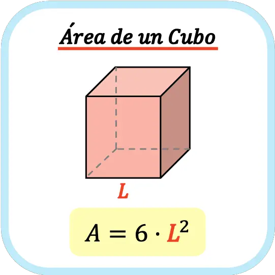
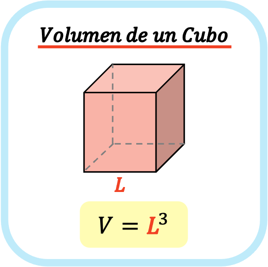
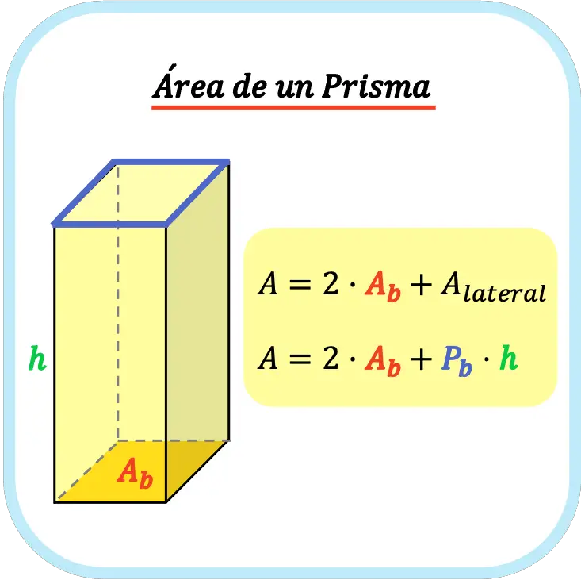
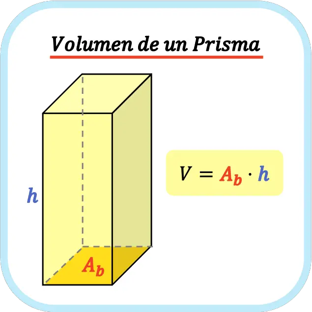
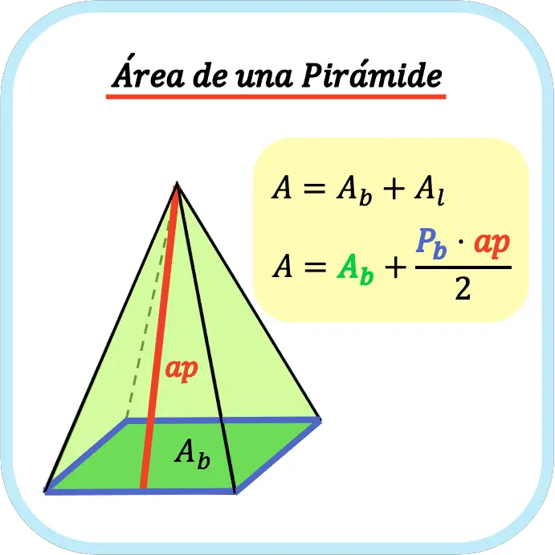
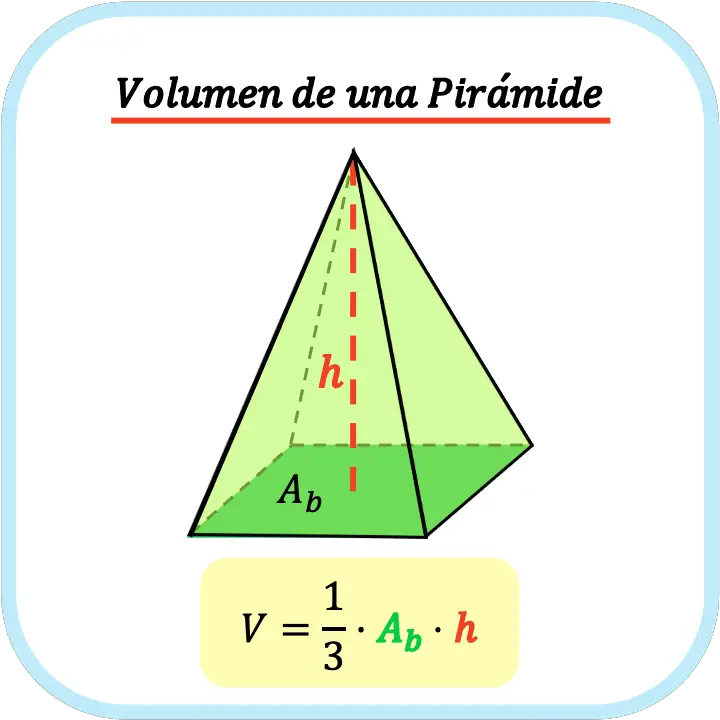
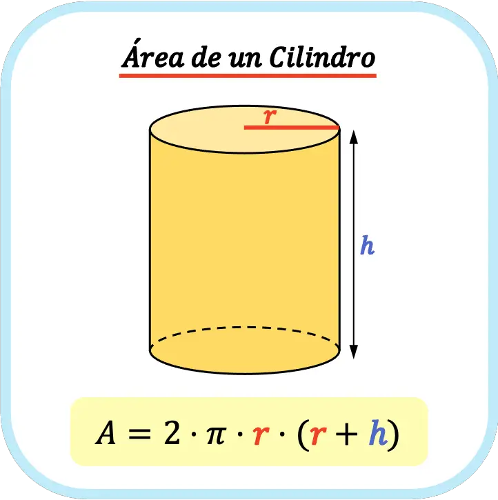
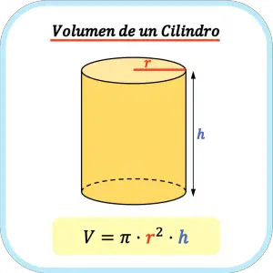
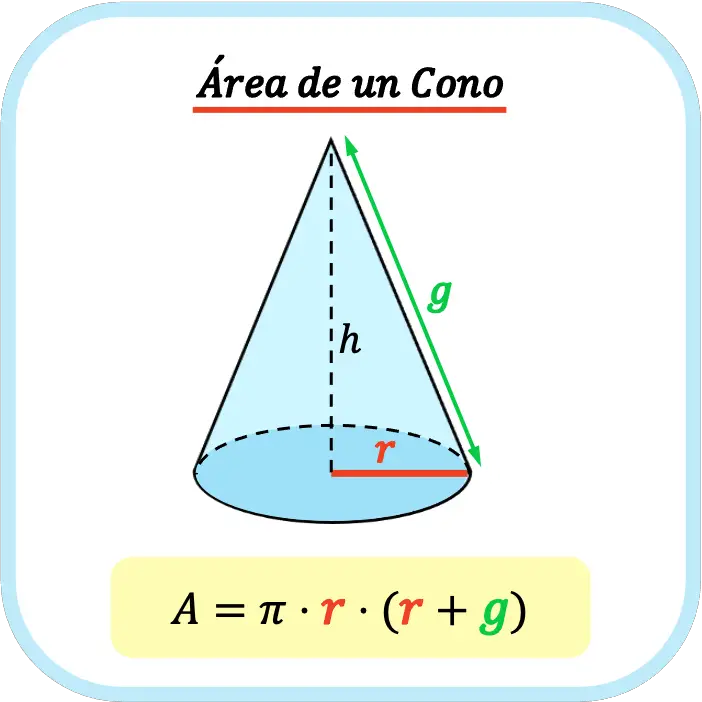

En matemáticas, el área es la superficie que ocupa una figura plana. Es decir, el área es una medida que indica el espacio delimitado por el contorno de una figura.
Ten en cuenta que el área solo se puede calcular si la figura es plana, es decir, si es una figura de dos dimensiones. No obstante, se puede calcular el área de las caras de un cuerpo geométrico con volumen porque, a pesar de que el cuerpo es de tres dimensiones, sus caras solamente tienen dos dimensiones.
¿Qué es el volumen?
El volumen es una magnitud que expresa la extensión en tres dimensiones de un cuerpo. Es decir, el volumen es una magnitud que indica el espacio que ocupa un cuerpo geométrico.
Por ejemplo, cuando decimos que un objeto tiene un volumen de 1 m3, significa que ocupa un espacio equivalente a un metro de largo, un metro de ancho y un metro de alto.
Diferencia entre área y volumen
Por lo tanto, la diferencia entre el área y el volumen es el número de dimensiones. El área es el espacio de dos dimensiones que ocupa una figura, en cambio, el volumen es el espacio de tres dimensiones que ocupa un cuerpo geométrico.
Por ejemplo, una viga redonda en posición vertical es un cilindro que tiene un gran volumen porque es un objeto muy alto. Sin embargo, si mirásemos la viga desde arriba, tan solo veríamos un círculo de pequeña superficie, ya que se trata de un objeto delgado.
Fórmulas de áreas y volúmenes de cuerpos geométricos
A continuación, veremos todas las fórmulas para calcular el área y el volumen de los diferentes tipos de cuerpos geométricos. Sin embargo, si quieres puedes ir directamente al final del post donde encontrarás una tabla con el resumen de todas las fórmulas de áreas y volúmenes.
Área y volumen de un cubo
El área de un cubo se calcula sumando las áreas de sus seis caras cuadradas. Por lo tanto, el área de un cubo es igual a seis por el cuadrado de la longitud del lado (o arista).
De modo que la fórmula del área de un cubo es la siguiente:

El volumen de un cubo se calcula multiplicando el área de su base cuadrada por la altura del cubo. Por lo tanto, el volumen de un cubo es igual a la longitud de su lado (o arista) elevada al cubo.
Así pues, la fórmula del volumen de un cubo es la siguiente:

Área y volumen de un prisma
Para calcular área total de un prisma se debe sumar el área de las dos bases del prisma más el área de las caras laterales del prisma. Por lo tanto, el área de un prisma es igual a dos por el área de una base más el perímetro de la base por la altura del prisma.
Así que la fórmula para calcular el área de un prisma recto es la siguiente:

Área y volumen de una pirámide
Para calcular el área total de una pirámide se debe sumar el área de su base más las áreas de sus caras laterales. Por lo tanto, el área de una pirámide regular es igual al área de la base más el perímetro de la base multiplicado por la apotema de la pirámide partido por dos.
Es decir, la fórmula para calcular el área de una pirámide regular es la siguiente:

El volumen de una pirámide es igual a un tercio por el área de la base por la altura de la pirámide. Por lo tanto, para calcular el volumen de una pirámide se debe multiplicar el área de la base por la altura de la pirámide y dividir entre tres.
Así pues, la fórmula para calcular el volumen de una pirámide es la siguiente:

Área y volumen de un cilindro
El área de un cilindro es la suma del área de sus dos bases circulares más su área lateral. Por lo tanto, el área de un cilindro es igual a dos por pi por el radio del cilindro por la suma de dicho radio más la altura del cilindro.
De manera que la fórmula para calcular el área de un cilindro es la siguiente:

El volumen de un cilindro se calcula multiplicando el área de la base circular por la altura del cilindro. Por lo tanto, el volumen de un cilindro es igual a pi por el cuadrado del radio de la base por la altura del cilindro.
De modo que la fórmula para calcular el volumen de un cilindro es la siguiente:

Para calcular el volumen de un cono se debe multiplicar un tercio por el área de la base del cono por su altura. Por lo tanto, el volumen de un cono es igual a pi por el cuadrado del radio del cono por su altura partido por tres.
Así que la fórmula para calcular el volumen de un cono es la siguiente:

Área y volumen de una esfera
El área de una esfera es igual a cuatro por el número pi por el cuadrado del radio de la esfera. Por lo tanto, para calcular el área de una esfera solo es necesario conocer su radio.
De modo que la fórmula para calcular el área de una esfera es:
El volumen de una esfera es igual a cuatro tercios por el número pi (3,1416) por el cubo del radio de la esfera. Por lo tanto, para calcular el volumen de una esfera se debe elevar a la tres su radio, luego multiplicar por cuatro y por pi y, por último, dividir entre tres.
En definitiva, la fórmula para calcular el volumen de una esfera es:

Tabla con todas las fórmulas de áreas y volúmenes
Para terminar, a modo de resumen, te dejamos una tabla con todas la fórmulas para calcular las áreas y los volúmenes de los diferentes tipos de sólidos geométricos.